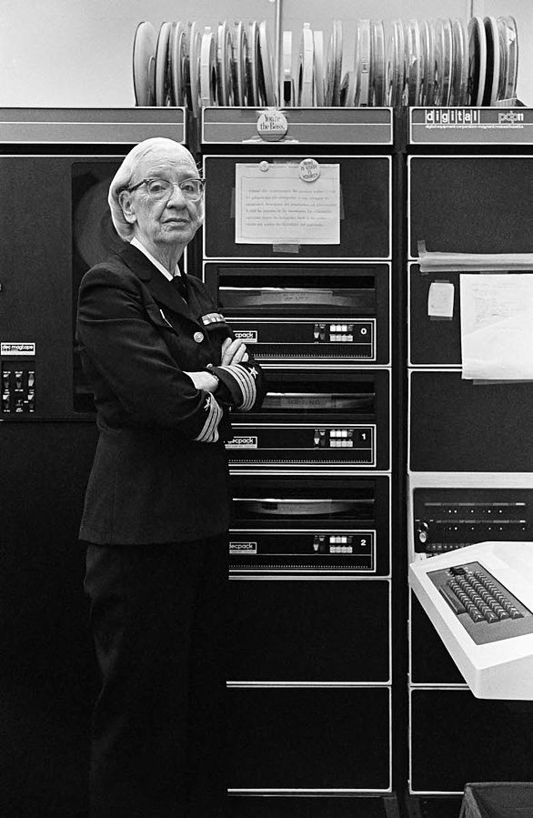

Tarea 4
Defina los siguientes términos
Compilador
Un compilador es un programa informático que traduce un programa escrito en un lenguaje de programación, definido «código fuente», a otro lenguaje de alto (COBOL, PASCAL, BASIC, C, etc.), medio o más bajo nivel (código intermedio o código máquina) como puede ser C/C++.
Por otro lado, un programa es el conjunto de instrucciones detalladas y codificadas que se dan a un ordenador para que realice o ejecute determinadas operaciones.
La importancia de los compiladores radica en que, sin estos programas no existiría ninguna aplicación informática, ya que son la base de la programación en cualquier plataforma. Es más, a partir del mismo código fuente, un compilador tiene la capacidad de producir código máquina en varias plataformas a la vez.
Origen
Grace Hopper, Doctora en Matemáticas y Almirante del Ejército Norteamericano.
Estaba convencida de que los ordenadores podían llegar a un público más amplio y comercial si los procedimientos para programar se volvían más amistosos y si pudieran ser entendibles para los no matemáticos.
Ella pensaba que los ordenadores se tenían que poder escribir en inglés.
En 1949, tras seguir su convicción, desarrolló una técnica que traducía los símbolos matemáticos a un código de instrucción binario y que era entendible por la máquina.
Esto no era otra cosa sino el primer programa compilador, que fue presentado 3 años más tarde por Hopper y su equipo.
Las bases de los lenguajes de programación modernos fueron establecidas desde ese momento.
Tipos
- Analizador: Se habla de «analizador» ya que se encarga de realizar el análisis del código fuente a compilar, lo valida e interactúa con el usuario. Además, suele ser independiente de la plataforma en la que se trabaja.
- Generador: Es la parte del compilador que, a partir de los resultados de análisis, se encarga de generar el código para la máquina según la plataforma específica.
Intérpretes
Los intérpretes son programas que, a diferencia de un compilador, no leen todo el código primero como un todo, sino que leen cada línea del programa fuente por separado y la ejecutan directamente en la plataforma sin traducir primero el código. De este modo, cada análisis se produce durante la ejecución del programa. Java, por ejemplo, utiliza intérpretes.
Origen
El valor de los intérpretes es que un programa puede saltarse la traducción del código fuente y simplemente ejecutar las instrucciones del código directamente. El trabajo del intérprete es, por lo tanto, implementar exactamente las rutinas que fueron registradas por el desarrollador respectivo.
Al interpretar el código fuente, la traducción y la ejecución del código no son pasos separados. La entrada y el código fuente se ejecutan simultáneamente. Cada línea con una instrucción resulta en una acción inmediata por parte del intérprete. Por lo tanto, podría decirse que un intérprete realiza dos pasos al mismo tiempo, es decir, la traducción y la ejecución. Un paso sigue al siguiente en orden lógico de acuerdo con las especificaciones del código fuente.
Tipos
- Interpretación Iterativa
- Interpretación Recursiva
- Intérpretes Puros
- Intérpretes Incrementales
- Evaluadores parciales